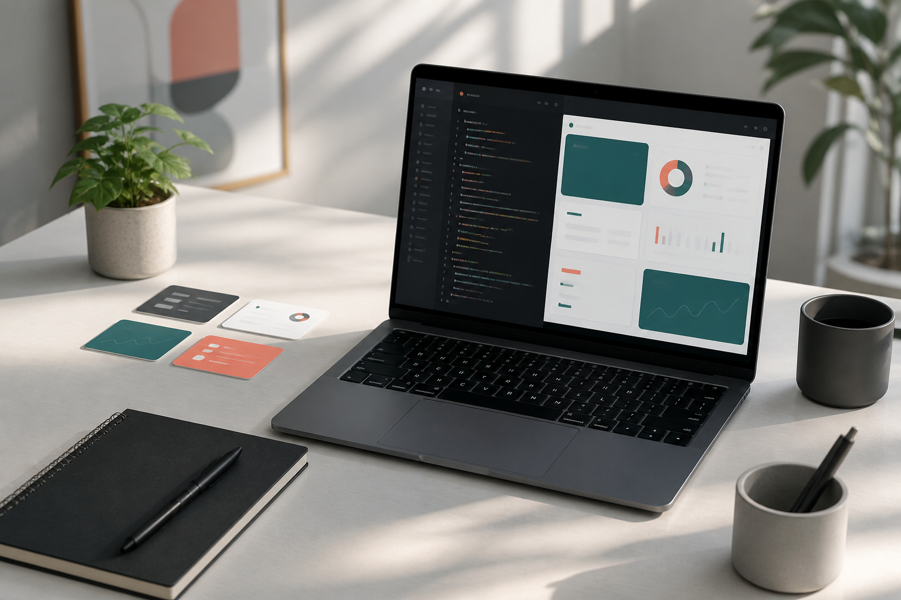

Frontend Developer · Product-minded Engineer
홍길동
사용자 흐름을 읽고, 팀이 오래 유지할 수 있는 웹 제품을 만듭니다. 기획 의도를 인터페이스와 코드 품질로 연결하는 일을 좋아합니다.
- 4년+
- 웹 서비스 개발
- 12개
- 제품 기능 출시
- 3개
- 주요 도메인 경험

About
문제를 작게 나누고, 사용자에게 닿는 완성도로 마무리합니다.
저는 프론트엔드와 제품 경험 사이의 간격을 줄이는 개발자입니다. 디자인 시스템, 성능 개선, 복잡한 상태 관리, 협업 가능한 코드 구조에 관심이 많습니다.
최근에는 데이터가 많은 업무 화면을 빠르게 탐색할 수 있도록 정보 구조를 다듬고, API 오류와 비동기 상태를 예측 가능한 사용자 경험으로 바꾸는 작업을 해왔습니다.
Skills
제품을 끝까지 굴러가게 만드는 기술 스택
Product UI
Engineering
Projects
최근에 집중한 프로젝트
샘플 프로젝트입니다. 실제 프로젝트명, 성과, 링크로 교체하세요.
Experience
일하는 방식과 경험
프로덕트 개발자 · Example Company
업무용 SaaS의 핵심 화면을 개발하며 성능, 접근성, 디자인 시스템 품질을 함께 개선했습니다.
프론트엔드 개발자 · Growth Studio
랜딩, 결제, 관리자 도구를 만들고 실험 데이터를 바탕으로 사용자 흐름을 개선했습니다.
웹 개발 인턴 · Startup Lab
정적 사이트, API 연동 화면, 사내 자동화 도구를 만들며 제품 개발의 기본기를 다졌습니다.
Contact
같이 만들 제품 이야기를 들려주세요.
협업, 채용, 프로젝트 제안 모두 환영합니다. 아래 샘플 연락처를 실제 이메일과 GitHub 주소로 교체하면 바로 사용할 수 있습니다.